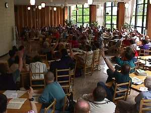

|
|
|
Church split on syrup?!
|  |
Down for the count: Synod members vote
down the hotly debated Syrup Motion |
With debate raging amid charges of "Eastern imperialism," the General
Synod held its first resolution this afternoon. What caused such a split in the
church so early in proceedings?
Maple syrup. Maple syrup declared mandatory for use in
every parish.
The mock resolution was a demonstration for first-time members in
their orientation on day one. With prolocutor Rendina Hamilton playing the Primatial
role, members learned everything from how to speak into a microphone to the ins and outs
of sessional committees.
And the maple syrup motion? Soundly defeated. |